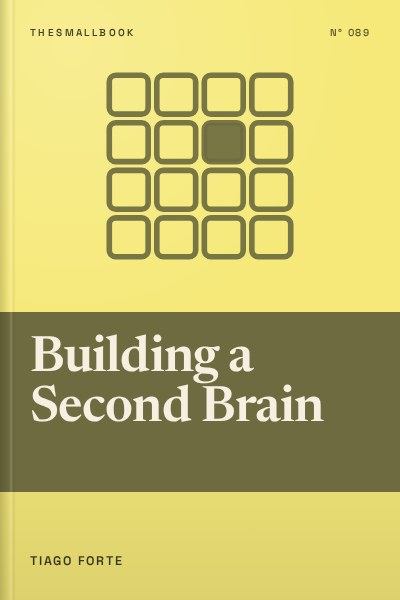

Library › Productivity
Building a Second Brain - Summary & Key Lessons

Stop trying to remember everything. Build a trusted digital system that captures, organises and turns ideas into work.
📖 OPEN THE FULL INTERACTIVE BREAKDOWN →🌐 Read it in Hindi, Hinglish, Gujarati, Tamil & 22 more languages, with audio.
💡 The Big Idea
We consume more information than ever, yet most of it vanishes within days. Tiago Forte argues we need a second brain: a personal digital system that stores ideas, notes and resources so our biological brain can focus on thinking and creating. His method has two parts. CODE describes the process: Capture what resonates, Organise it for action, Distill it to its essence, and Express it by creating something. PARA describes the structure: Projects, Areas, Resources and Archives. Together they turn scattered notes into a creative asset that compounds over time.
🧠 The 8 Key Lessons
Lesson 1: Why You Need a Second Brain
Chapter 1: Where It All Started
Forte began building his system after a health crisis forced him to track symptoms and treatments in detail. He realised that capturing information outside his head reduced stress and improved decisions. Our biological memory is unreliable and limited, especially under overload. A second brain is an external, searchable record of what you learn and think. It reduces anxiety about forgetting, helps you connect ideas across time and turns past learning into future work.
📖 Example: Forte describes how keeping detailed notes on his medical condition helped him spot patterns doctors had missed. Later, he applied the same habit to work, capturing ideas from books, meetings and conversations, and found he could produce projects faster because he was not starting from zero. Read the full example →
⚡ Do this: Pick one digital tool you already use (Notes, Google Keep, Notion, or this app's notebook) and make it your official place to capture ideas from today.
Lesson 2: Capture: Keep What Resonates
Chapter 3: Capture
The first step is capturing, but not everything. Forte recommends saving only what resonates: ideas that surprise you, inspire you, are useful, or feel personal. Capture in your own words when possible, and include context such as where you found it. The goal is a curated collection of valuable material, not a hoard. He suggests thinking of your notes as a knowledge garden that you tend, not a warehouse you fill.
📖 Example: Forte describes Richard Feynman's habit of keeping a list of his favourite problems, open questions he cared about. Whenever he learned something new, he tested it against those problems. Forte suggests keeping your own list of twelve favourite problems to guide what you capture. Read the full example →
⚡ Do this: Write down three to twelve questions you are curious about right now. Next time you read or watch something, capture only what relates to one of them.
Lesson 3: Organise With PARA
Chapter 4: Organize
Instead of organising notes by topic, Forte recommends organising by actionability using PARA. Projects are short-term efforts with a goal and deadline. Areas are ongoing responsibilities such as health, finances or a job role. Resources are topics of interest for the future. Archives hold inactive items from the other three. This structure ensures the information you need for current work is easy to find, while everything else stays out of the way but available.
📖 Example: Forte shows how a note about a marketing technique might go into a Project folder for a product launch rather than a general 'Marketing' folder. When the launch is complete, the folder moves to Archives, keeping the active workspace clean. Read the full example →
⚡ Do this: Create four folders in your notes app: Projects, Areas, Resources, Archives. Move your ten most recent notes into the right ones.
Lesson 4: Distill: Progressive Summarisation
Chapter 5: Distill
Notes are only useful if you can quickly grasp them later. Forte's method, progressive summarisation, adds layers of highlighting each time you revisit a note: first bold the key points, then highlight the best of those, then write a short summary at the top in your own words. You do this gradually, only when a note proves useful. The result is notes that can be understood in seconds, saving time and making ideas reusable.
📖 Example: Forte compares good notes to a map that lets you see the whole territory at a glance. He shows a book note with paragraphs, bolded sentences, a few highlighted lines and a two-sentence summary at the top, allowing quick review before writing. Read the full example →
⚡ Do this: Take one long note you saved recently. Bold the key passages, highlight the top three lines, and write a two-sentence summary at the top.
Lesson 5: Express: Show Your Work
Chapter 6: Express
The purpose of a second brain is not storage but creation. Forte urges readers to use notes to produce work: essays, presentations, plans, videos. He suggests creating 'intermediate packets,' small reusable pieces such as outlines, drafts, slides or checklists, that can be combined into larger projects. Sharing work early also brings feedback and new ideas, feeding the system further.
📖 Example: Forte explains how he built online courses by assembling intermediate packets he had created over months: blog posts, frameworks, diagrams and talks. Instead of writing from scratch, he remixed and refined existing pieces. Read the full example →
⚡ Do this: Look through your notes and assemble three related items into a short post, slide or message you can share with someone this week.
Lesson 6: The Creative Process: Divergence and Convergence
Chapter 7: The Art of Creative Execution
Forte describes creativity as alternating between divergence (exploring and gathering ideas) and convergence (narrowing down and producing). Capture and organise support divergence; distill and express support convergence. Many people get stuck collecting endlessly or trying to produce without material. Knowing which phase you are in helps you use the right tools and mindset.
📖 Example: Forte recommends techniques such as the 'Archipelago of Ideas,' arranging key notes into islands before writing, and the 'Hemingway Bridge,' stopping work at a point where you know what comes next so it is easy to restart. Read the full example →
⚡ Do this: For your current project, decide whether you are diverging or converging. If converging, stop collecting new material and outline using what you already have.
Lesson 7: Habits That Keep the System Alive
Chapter 9: The Essential Habits of Digital Organizers
A second brain needs maintenance, but not perfection. Forte suggests three habits: project checklists (starting and finishing projects with a review of relevant notes), weekly reviews (clearing inboxes and updating folders) and noticing habits (spotting chances to capture or reuse ideas). He emphasises keeping the system simple enough that you actually use it.
📖 Example: Forte describes his weekly review: emptying his notes inbox, moving items into PARA folders, updating his project list and reviewing his calendar. It takes about thirty minutes and keeps the system trustworthy. Read the full example →
⚡ Do this: Schedule a 30-minute weekly review. During it, clear your notes inbox, update your project list and archive finished items.
Lesson 8: Your Second Brain Compounds
Chapter 10: The Path of Self-Expression
Over time, a second brain becomes more valuable as notes accumulate and connections emerge. Forte argues this changes how you see yourself: from a consumer of information to a creator. Ideas that seemed unrelated start to link, and you can produce work with less effort because you have a library of your own thinking. The real benefit is confidence that your ideas will not be lost.
📖 Example: Forte shares stories of students, professionals and writers who used their second brains to write books, change careers or launch businesses. Their notes became raw material for their creative work. Read the full example →
⚡ Do this: Look back at notes from six months ago. Find two ideas that connect to something you are working on now, and write how they link.
✅ 5-Step Action Plan
- Choose one tool as your official capture inbox.
- Write down your list of favourite problems.
- Create PARA folders and sort your last ten notes.
- Progressively summarise one important note.
- Schedule a weekly 30-minute review.
⚠️ When This Doesn't Work
Building a second brain can become a hobby that replaces actual work: endless tweaking of tools and folders. Forte himself warns against this. Keep the system simple, use whatever tool you already have and judge it by what you create, not by how beautiful your notes look.
💀 The Graveyard Proves It
💬 Best Quotes from Building a Second Brain
- “Your mind is for having ideas, not holding them.”
- “Organize for action, not by subject.”
- “The point is not to collect as many notes as possible. It is to use them.”
Interactive version: mark lessons as read, listen in your language, share quote cards.